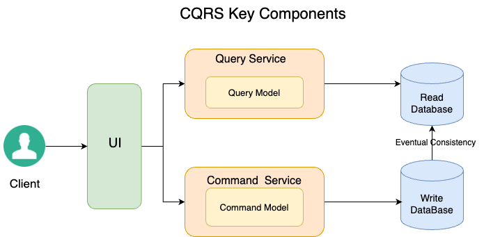
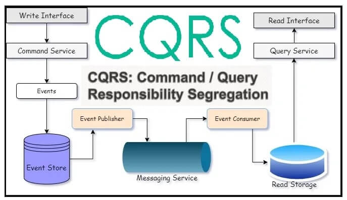
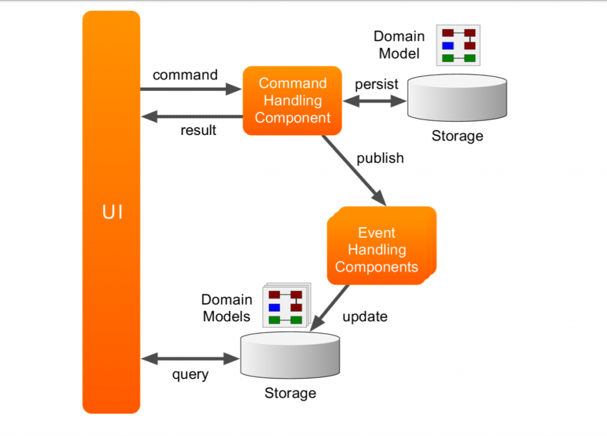

System Design Mastery
Master scalable systems with premium insights
⚡ CQRS in Microservices
1️⃣ What is CQRS?
CQRS (Command Query Responsibility Segregation) is a design pattern where read operations (queries) and write operations (commands) are handled separately.
🎯 Instead of one system doing both:
- Write (update data)
- Read (fetch data)
✅ We split into:
- Command side → Writes
- Query side → Reads

⚡ CQRS Architecture - Command and Query Separation
🔑 Key Concept:
Commands represent state-changing operations like creating, updating, or deleting data. They do not return data but instead trigger events to reflect the changes.
Queries, on the other hand, are read-only operations that retrieve data in a format optimized for presentation, without altering the underlying state.
🧠 Understanding the Models:
- The write model handles commands and includes business logic, validation, and transactional integrity.
- The read model focuses on queries, often using denormalized or materialized views to enhance performance.
2️⃣ Why does CQRS exist? (Problem it solves)
🎯 In large systems:
- Reads and writes have very different workloads
- Queries need optimized fast reads
- Writes need strong consistency
✅ CQRS solves:
- Performance bottlenecks
- Scaling issues
- Complex query logic
- High read traffic systems
3️⃣ What breaks without CQRS?
❌ Without CQRS:
- Single DB handles both read & write → bottleneck
- Complex queries slow down writes
- Hard to scale independently
- Poor performance in read-heavy systems
📌 Example:
Social media feed → millions of reads, few writes
4️⃣ Real-world analogy
🍽️ Restaurant Analogy
👨🍳 Chef
→ prepares food (write)
🤵 Waiter
→ serves food (read)
💡 Insight:
Different roles → better efficiency
5️⃣ How CQRS Works in Microservices
🔹 Command Side (Write Model)
- Handles create/update/delete
- Ensures consistency
- Uses transactional DB
Example:
Create Order
Update Payment
🔹 Query Side (Read Model)
- Handles read requests
- Optimized for fast queries
- Uses denormalized or cached data
Example:
Get Order Details
Get User Dashboard
🔹 Flow in Microservices

🔄 CQRS Flow in Microservices Architecture
🛠️ Often uses:
- Apache Kafka
- RabbitMQ
6️⃣ Real App Example
🛒 E-commerce
✍️ Write side:
- Create order
- Update payment
👁️ Read side:
- Order history
- Dashboard view
- Recommendations
🔄 Flow:
Order placed → Event → Update read DB
7️⃣ CQRS + Event Sourcing
CQRS often pairs well with Event Sourcing, where changes are stored as a sequence of events. This approach allows the system to rebuild the current state by replaying events, providing a complete history of changes and enabling features like auditing or undo operations.

📝 CQRS Combined with Event Sourcing
8️⃣ When to use / NOT use
✅ Use CQRS when:
- High read traffic systems
- Complex queries
- Microservices architecture
- Real-time systems
Examples:
Banking systems
E-commerce platforms
Social media
❌ Avoid CQRS when:
- Small applications
- Simple CRUD systems
- Low traffic systems
⚠️ Because:
- Adds complexity
- Harder to maintain
9️⃣ Common Mistake
🚨 Overengineering
Using CQRS for simple apps leads to:
- Unnecessary complexity
- Debugging difficulty
🎯 Interview-ready one-liner
CQRS separates read and write operations into different models, allowing systems to scale, optimize, and handle complex workloads efficiently in microservices architectures.
🧠 Summary
- CQRS separates command (write) and query (read) operations into different systems.
- It allows independent scaling and optimization of read and write workloads in microservices.
- It is often combined with event-driven architecture and event sourcing for high scalability systems.